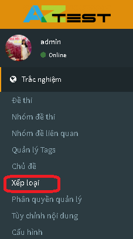
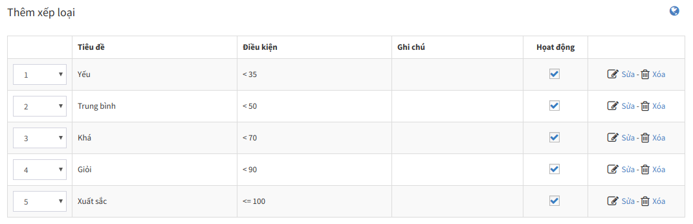

XẾP LOẠI là hình thức đánh giá kết quả thi dựa vào điểm thi. Xếp loại có thể dễ dàng cấu hình theo ý của người quản trị.
- Truy cập Trắc nghiệm / Quản lý xếp loại (menu dọc)

- Mặc định, AZtest cấu hình sẵn 05 mốc xếp loại phổ biến, bạn có thể thay đổi các giá trị phù hợp với yêu cầu.

Sau khi thực hiện xong bước Xếp loại, bạn thực hiện tiếp bước Đề thi để tạo một để thi trắc nghiệm hoàn chỉnh.